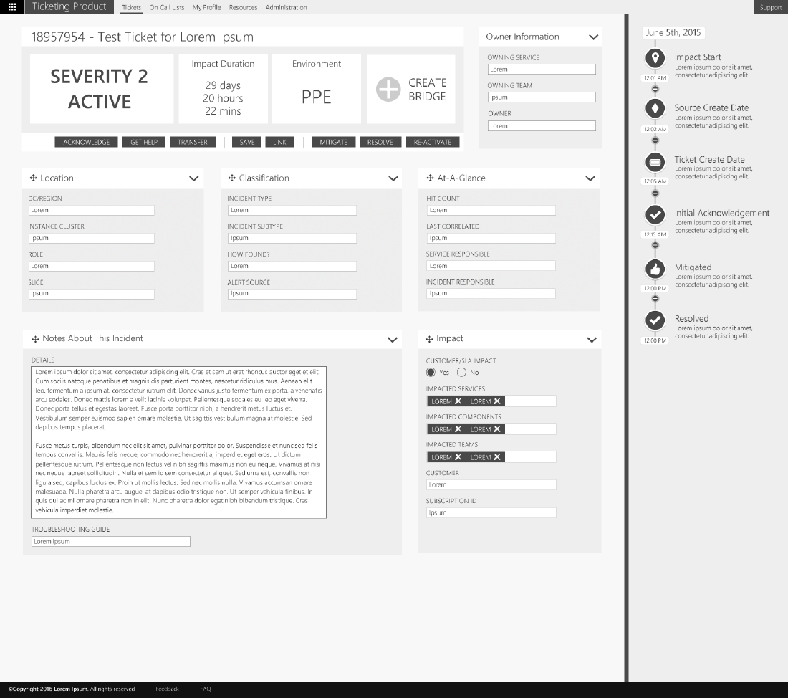

I created a ticketing experience for Microsoft Azure's Cloud Engineering Services. Based off of data and previous feedback I created some wireframe experiences to be tested on users. Using quantitative data a feature set and flow was narrowed down through testing and a final experience was then again tested with users.
View PDF 